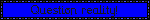
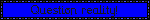
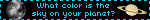
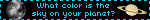
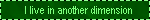
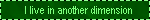
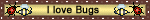
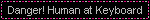
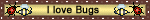
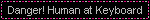

Name: Owen B.
Age: current year minus 2000
Height: short
Weight: didn't your mom ever teach you not to ask strangers that
Eyes: four
Species: Human, I've been assured.
Part-time dinosaur, full-time idea-haver. World's most useless renaissiance man. Lives in a state that begins with "M". Likes drawing comics, finding cool things on the ground outside, making stuff, and sometimes messing around with code, resulting in this site.
Life plan: build the robots that steal everyone else's jobs, then retire to become an eccentric old beekeeper, if bees are still around by then. :(

 



 

 
 
